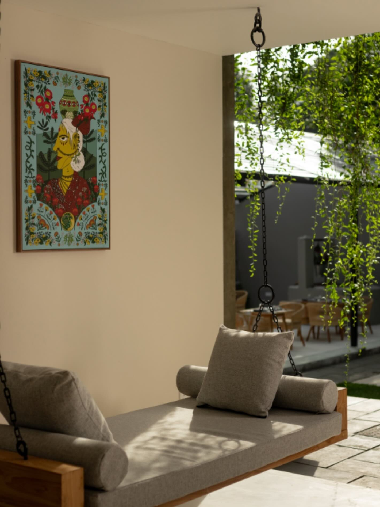

Our Story
A Space to Breathe
KARABU was born from a simple belief — that a café should feel like a pause in the day. A warm corner, a great cup, a moment entirely your own.
We source our beans with care, craft every drink with intention, and design every detail so you leave feeling a little lighter than when you arrived.
2019
Founded
100%
Specialty Beans
∞
Good Moments

Est. 2019